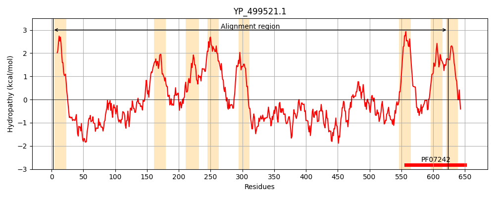
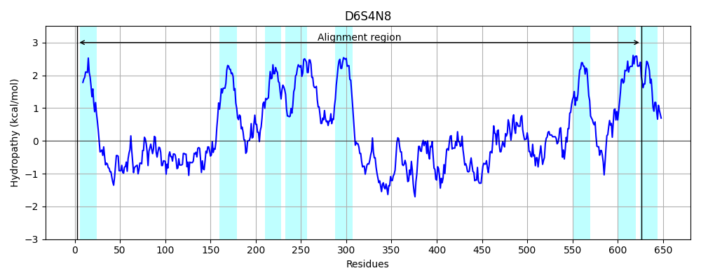
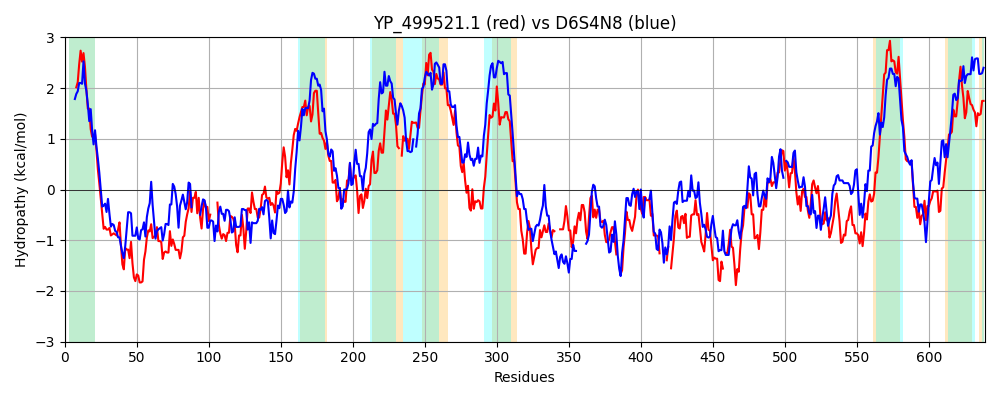

Hit Accession: D6S4N8
Hit TCID: 9.A.7.1.2
Hit Description: gnl|BL_ORD_ID|3366 gnl|TC-DB|D6S4N8|9.A.7.1.2 Bacteriocin-associated integral membrane protein OS=Lactobacillus jensenii JV-V16 GN=HMPREF0526_11181 PE=4 SV=1
Mach Len: 639
e:0.000000
Query TMS Count : 8
Hit TMS Count: 8
TMS-Overlap Score: 6.400000
Predicted Substrates:None
BLAST Alignment:
Score: 410 , Bit scores: 162 bits, E-value: 2.1e-42, Alignment length: 639, Percentage identity: 23
Query: 2 KWFKLILDVTIFILIAILLFVYTYKENEEILPDTKYPIAVTDWNKKYSKNEIYKRIDQFAKNENVAIYKSTSNYTNKNVDKDIYVFNKSKAATITPFNAKYN----IHYLSDDEVLKKDIKGSYFVKDKNFDVSKFINFLKEYGVTAESYKIDHMMIAVGVIKQMNIVVPLSSLLIVYFIYYIFEKNINFKAYAIKYLNGFTLRKIIFENFSKKCTYWVTLIITQILLTTSVL-WILNYTGNLDLFILRIVLLSCLFILTISVINLWTFLMLLNLNIANMIKGKQHFKTIRFINTVCKSILLVLIANVMIENTSVIKDLNKIKETEKYWNVLDDYYTIEFA---PYHETKQSLIDNMVRSEQLVKASEAENNAILFKPKGDSVD--NDNFSPDEGNVILVNNQFWSIYYKQFQP----DI-PIKNQKNNVEVIIPQKFHAMRNEINQAYHSWFEFVQN-KNNKENKLSIQFIN-KNDCRIFSFDARDSRHLSFIEAPIIVNVQASDLSNDFYYAMISQGGYLFKNYDALVKNIEKYHLDGEISGITNYKDSVMEMYHENNLKLTVLNFSQIIIAIILIIIILFDVKYYFEQHRKLLVIKKLYGYSTLRANYQYLLINNIVVIFIGILTNVILHSHYIMM 623
K KL L I I+ LL + + E +P + I V +K +K +++ + + A+ + + N N +V K IYVFN P+NA + S EV D+KG Y+ + + K + L +YG+ E K D +A +N ++ S+ ++F + EK N K YAI LNG+ KI+ + + ++ I++ V W +N TG + F ++L + ++ ++ L ++ LL + IKG+ + + ++ + K +LL+++ + S +K+L+ + W YTI++ P ++ + N L K A+N+ ++ ++NF GNV+++N F + Y + + D+ ++ Q + V +P + +EI + + F Q K KL+ ++I KN ++F++ S P+ + V + LSNDFY++ ++G FKN L + + L I GIT+ K + + KLT+L+ + ++ L +++F + ++ R + I+K++G S ++ N ++ I + IL + ++I++
Sbjct: 3 KTIKLSLFTIISIVAFFLLSTVIRQYDLETIPGEQNVIKVYGDKQKANKAQVFFELKKVARKGHYQLTLIRQNTINNSVTKSIYVFNSD-----LPYNASLYRNSAVKQFSSKEVELLDLKGEYYTNASSSEFVKLQSKLTDYGLKFEVGKDDFWKVAFFNENILNYLLIFISVFAIFFTVSVMEKVANLKKYAILRLNGWNFFKILVRDLLDISRPFAIILSALIIIFGVVTSWEMNLTGII-FFAKYGLILELVLLIFALLLELLSYFPLLLAKLGAAIKGQTYSAALTAVSYLLKIVLLIVVFFNLFILYSSVKNLHDDQNIMNMWISRGSGYTIQYGYVDPQDRAEEDKLGN------LTKKLVAKNSDVIISRTNQEYHPASNNFDVTNGNVLIINKNF--LKYNKLEDLTGKDLYKLRYQAKTLYVFVPITHKSKLSEIKKNVVDYTSFQQELSGRKGQKLNFEYILIKNPGQVFNYLIGKEISDSISTNPVFI-VDSGLLSNDFYFSSATKGMIQFKNLQKLKTQLSQLGLQSYIVGITDAKTRLSNFNITISRKLTILSLTIVLSIGQLFFLMIFIASSFLQKERPRMAIRKVFGISNYDLVLKFTSFNLLIDIGVAILVAIFCGINWILI 626 | Protein Hydropathy Plots: |
|---|
|  |  |
Pairwise Alignment-Hydropathy Plot:
|
|---|
|  |